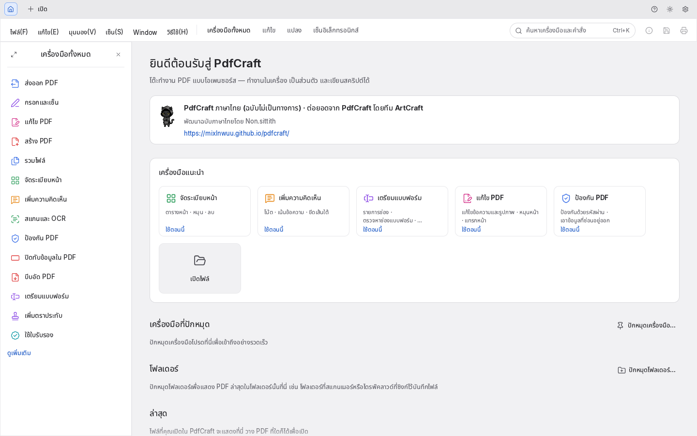
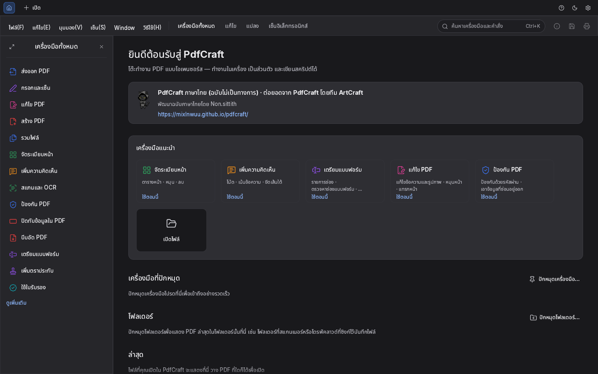
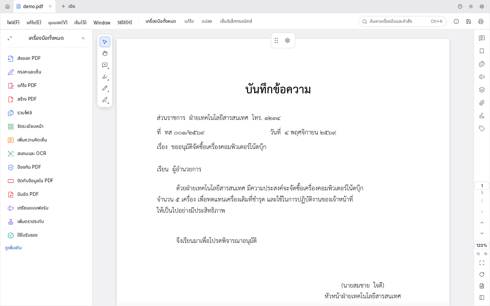
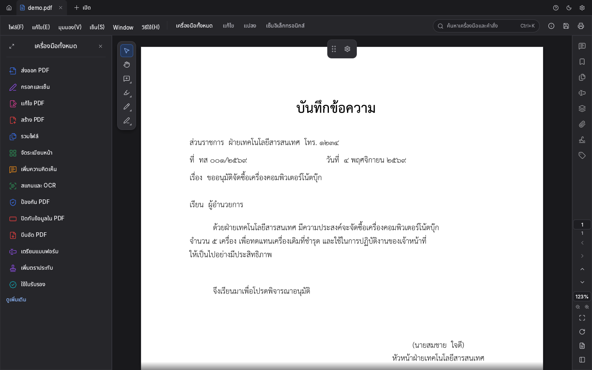

พิมพ์ภาษาไทยลงใน PDF
เพิ่มข้อความใหม่หรือแก้ข้อความเดิมเป็นภาษาไทย สระและวรรณยุกต์วางตำแหน่งถูกต้อง ค้นหาและคัดลอกข้อความได้
โปรแกรมแก้ไข PDF ฟรี เมนูไทยทั้งหมด พิมพ์และแก้ข้อความไทยใน PDF ได้ สระและวรรณยุกต์ไม่เพี้ยน มีฟอนต์ TH Sarabun PSK ในตัว


ดูการใช้งาน PdfCraft ภาษาไทยเบื้องต้น
เครื่องมือที่งานเอกสารไทยต้องใช้ ครบในโปรแกรมเดียว
เพิ่มข้อความใหม่หรือแก้ข้อความเดิมเป็นภาษาไทย สระและวรรณยุกต์วางตำแหน่งถูกต้อง ค้นหาและคัดลอกข้อความได้
หน้าจอและเมนูเป็นภาษาไทยทั้งโปรแกรม เลือกหรือเปลี่ยนภาษาได้ที่ การตั้งค่า › ภาษา
มีครบทั้งตัวปกติ ตัวหนา ตัวเอียง และตัวหนาเอียง และใช้ฟอนต์ที่ติดตั้งในเครื่องได้เหมือน Word
กรอกแบบฟอร์ม ใส่วันที่แบบไทย ลายเซ็นแบบพิมพ์ และชื่อภาษาไทยในลายเซ็นดิจิทัล
เขียนโน้ต คำบรรยาย ตราประทับ หัวกระดาษ ท้ายกระดาษ และลายน้ำเป็นภาษาไทยได้
รวมไฟล์ จัดเรียง หมุน ลบหน้า บีบอัด PDF ใส่รหัสผ่าน และปิดทับข้อมูลที่ไม่ต้องการให้เห็น
คัดลอกกล่องข้อความด้วย Ctrl+C / Ctrl+V จัดลำดับชั้น มีเส้นช่วยจัดกึ่งกลางหน้า และลากของข้ามหน้าได้
เปลี่ยนไฟล์สแกนให้ค้นหา คัดลอก และแก้ข้อความไทยได้ ทำงานในเครื่องทั้งหมด
ไม่ต้องสมัครบัญชี ใช้งานได้โดยไม่ต้องต่ออินเทอร์เน็ต ไฟล์ไม่ถูกส่งออกไปที่ไหน เป็นโปรแกรมโอเพนซอร์ส (ตอนเปิดโปรแกรมจะถาม GitHub ว่ามีรุ่นใหม่ไหม ปิดได้ที่การตั้งค่า)
พิมพ์ แก้ และจัดหน้าเอกสารภาษาไทยได้ในโปรแกรมเดียว


ฉบับภาษาไทยมีทุกอย่างของ PdfCraft ทางการรุ่น v0.18.2 และเพิ่มสิ่งเหล่านี้
| เรื่อง | PdfCraft ทางการ | PdfCraft ภาษาไทย |
|---|---|---|
| หน้าจอและเมนู | มีภาษาไทยแล้ว (ใช้คำแปลที่ฉบับนี้ส่งให้) | ภาษาไทยครบทุกข้อความ รวมเมนูที่มีเฉพาะฉบับนี้ |
| พิมพ์ภาษาไทยด้วยเมนู "เพิ่มข้อความ" | ได้ (ฟอนต์ Noto Sans Thai) | ได้ เลือกฟอนต์ไทยได้ ทั้ง TH Sarabun PSK และฟอนต์ในเครื่อง พร้อมตัวหนาและตัวเอียง |
| ภาษาไทยในเมนูอื่นที่เขียนข้อความลง PDF | ไม่ได้ หรือขึ้นเป็นเครื่องหมาย ? (ทดสอบกับรุ่น v0.13.0: หัวกระดาษ ลายน้ำ และชื่อในลายเซ็นไม่รับภาษาไทย กรอกและเซ็นกับความคิดเห็นขึ้นเป็น ?) | ได้ทุกเมนู: กรอกและเซ็น (วันที่แบบไทย) ความคิดเห็น คำบรรยาย ตราประทับ หัวกระดาษ/ท้ายกระดาษ ลายน้ำ แถบปิดทับ ช่องฟอร์ม สร้าง PDF จากข้อความ และชื่อในลายเซ็น |
| ฟอนต์ TH Sarabun PSK | ไม่มี | มีในตัว ครบ 4 แบบ |
| ใช้ฟอนต์ที่ติดตั้งในเครื่อง | ได้เฉพาะตอนแก้ข้อความเดิม และเฉพาะฟอนต์ที่มีสัญญาอนุญาตแบบเปิด ไม่มีช่องค้นหา (เพิ่มข้อความใช้ได้แค่ Helvetica, Times, Courier) | ได้ทุกฟอนต์ในเครื่อง ทั้งเพิ่มข้อความและแก้ข้อความเดิม เหมือน Word มีช่องค้นหาชื่อฟอนต์ และป้าย TH บอกฟอนต์ที่รองรับภาษาไทย |
| แบบอักษรของหัวกระดาษ/ท้ายกระดาษ และลายน้ำ | หัวกระดาษเลือกได้ 3 แบบ (Helvetica, Times, Courier) ลายน้ำ Helvetica อย่างเดียว ไม่มีตัวหนาหรือตัวเอียง | เลือกฟอนต์ไทยหรือฟอนต์ในเครื่องได้ พร้อมตัวหนาและตัวเอียง |
| ชี้เมาส์แล้วเห็นผลก่อนเลือก | ไม่มี | ในแผงจัดรูปแบบข้อความ ชี้ที่ฟอนต์ ขนาด สี ตัวหนา ตัวเอียง หรือขีดเส้นใต้ ข้อความจะเปลี่ยนให้ดูก่อน ถ้าไม่คลิกก็กลับเป็นแบบเดิม |
| ขนาดตัวอักษร | พิมพ์ตัวเลขเองหรือเลือกจากรายการ | พิมพ์เองได้ตั้งแต่ 1–500 pt เลือกจากรายการ หรือหมุนลูกกลิ้งเมาส์ พร้อมดูตัวอย่างก่อน |
| แก้ไขข้อความเดิมในไฟล์ | คลิกครั้งเดียวเปิดแก้ทันที | คลิกครั้งเดียวเลือก ลากหรือกดลูกศรเพื่อขยับ ดับเบิลคลิกเพื่อแก้ (คล้าย Word) และกด Ctrl+E เพื่อเข้าโหมดแก้ไขข้อความและรูปภาพ |
| จัดลำดับชั้น (หน้าสุด/หลังสุด) | ไม่มี | มี ใช้กับกล่องข้อความ รูปภาพ ความคิดเห็น และข้อความเดิมของไฟล์ (คลิกขวา › จัดลำดับ หรือ Ctrl+] / Ctrl+[) |
| เส้นช่วยจัดแนว | ไม่มี | แบบ Photoshop: ลากแล้วดูดเข้าแนวขอบและกึ่งกลางของหน้าและของสิ่งอื่นบนหน้า ทั้งตอนย้ายและย่อขยาย พร้อมเส้นและป้ายระยะ (เส้นกึ่งกลางหน้าสีเขียว) กด Alt ค้างเพื่อไม่ให้ดูด หรือปิดที่เมนูมุมมอง |
| ผสานและแยกกล่องข้อความ | ไม่มี | เลือกหลายกล่องแล้วคลิกขวาผสานเป็นกล่องเดียวในที่เดิม หรือแยกย่อหน้าเป็นกล่องละบรรทัด เหมาะกับไฟล์จาก Word ที่แยกคำละกล่อง |
| ไม้บรรทัดและเส้นตาราง | ไม่มี | มี (เมนูมุมมอง) กล่องที่ลากดูดเข้าเส้นตาราง เส้นตารางแสดงบนจอเท่านั้น |
| เส้นไกด์จากไม้บรรทัด | ไม่มี | ลากจากไม้บรรทัดแบบ Photoshop พร้อมป้ายบอกตำแหน่ง ดูดเข้ากึ่งกลางกระดาษแรงเป็นพิเศษ (สีเขียว) และขอบวัตถุ กล่องที่ลากดูดเข้าเส้นไกด์ |
| ข้อความแนวตั้ง | ไม่มี | เรียงทีละตัวอักษร (สระและวรรณยุกต์อยู่กับตัวอักษร) หรือหมุน 90° ใช้กับข้อความเดิมของไฟล์ได้ด้วย |
| ขีดเส้นใต้และระยะห่างบรรทัด | ทำได้เฉพาะข้อความเดิมของไฟล์ และเส้นใต้ค้างอยู่เมื่อลบหรือเปลี่ยนรูปแบบข้อความ | ทำได้ทั้งกล่องที่เพิ่มเองและข้อความเดิม เส้นใต้ไปกับข้อความทั้งตอนลบ ย้าย หรือเปลี่ยนรูปแบบ |
| คัดลอกความคิดเห็นและลากข้ามหน้า | ไม่มี | คัดลอก/วางความคิดเห็นได้ทุกแบบ ลากกล่องข้อความ รูปภาพ (รวมรูปเดิมในไฟล์) และความคิดเห็นไปหน้าอื่นได้ (Ctrl ค้าง = คัดลอกข้ามหน้า) และวางรูปจากโปรแกรมอื่นด้วย Ctrl+V |
| สั่งพิมพ์บน Windows | ไฟล์ที่มีข้อความแบบ Type 3 ทำให้โปรแกรมปิดตัวตอนพิมพ์ และรูปที่พิมพ์เป็นภาพถูกย่อเหลือราว 96 dpi จนเบลอ | ไฟล์แบบนั้นพิมพ์เป็นภาพให้อัตโนมัติ ไม่ปิดตัว และส่งรูปความละเอียดเต็มไปที่เครื่องพิมพ์ |
| หน้าต่างพิมพ์ | ต้องคลิกปุ่มพิมพ์ | กด Enter เพื่อพิมพ์ได้เลย |
| ป้ายอธิบายเครื่องมือ | อาจถูกเคอร์เซอร์บังเมื่อตั้งเคอร์เซอร์ใหญ่ | ปรับตำแหน่งตามขนาดเคอร์เซอร์ที่ตั้งไว้ใน Windows |
| ตรวจหาการอัปเดต | ตรวจเองตอนเปิดโปรแกรม และเสนอให้อัปเดตเป็นรุ่นทางการ | ตรวจตอนเปิดโปรแกรม แจ้งเฉพาะรุ่นใหม่ของฉบับภาษาไทย กด "อัปเดตและเปิดใหม่" ได้เลย ถามอย่างมากวันละครั้ง ติ๊ก "ไม่ต้องเตือนรุ่นนี้อีก" ได้ ปิดการตรวจได้ที่การตั้งค่า ไม่มีทางถูกแทนที่ด้วยตัวทางการ |
| OCR อ่านภาษาไทยจากไฟล์สแกน | อ่านได้เฉพาะภาษาอังกฤษ | อ่านตัวพิมพ์ไทยและอังกฤษในเครื่อง ไม่ส่งเอกสารออกนอกเครื่อง |
| จัดรูปแบบข้อความ | ทีละกล่อง | เลือกหลายกล่องแล้วเปลี่ยนพร้อมกันได้ และมีตัวคัดวางรูปแบบ (Format painter) |
| เลือกฟอนต์ในกรอกและเซ็น และกล่องข้อความความคิดเห็น | ไม่มี | เลือกฟอนต์ไทย ฟอนต์ในเครื่อง ตัวหนา และตัวเอียงได้ |
เปรียบเทียบกับ PdfCraft ทางการรุ่น v0.18.2 ตามโค้ดของทั้งสองฉบับและการทดลองใช้ตัวทางการ ถ้าทางการเพิ่มสิ่งเหล่านี้ในรุ่นถัดไป ตารางนี้อาจเปลี่ยน
รุ่น 0.20.0-th.1 สำหรับ Windows 10/11 แบบ 64 บิต
-windows-x64.msi แล้วดับเบิลคลิกเพื่อติดตั้ง ตัวติดตั้งเป็นภาษาไทย จะถามว่าให้ติดตั้งสำหรับตัวเองคนเดียว (ไม่ต้องใช้สิทธิ์ผู้ดูแลระบบ) หรือทุกคนในเครื่อง ถ้าเคยติดตั้งรุ่นก่อนไว้แล้ว ให้เลือกทุกคนในเครื่องเพื่ออัปเดตตัวเดิม จะมีทางลัดใน Start menu และบนเดสก์ท็อป-portable.zip แตกไฟล์ไว้ที่ใดก็ได้ (เช่น แฟลชไดรฟ์) แล้วเปิด pdfcraft.exeWindows อาจเตือนตอนเปิดครั้งแรก เพราะไฟล์โปรแกรมในฉบับนี้ยังไม่มีลายเซ็นดิจิทัล ถ้าขึ้นหน้าต่าง "Windows protected your PC" ให้กด More info แล้วกด Run anyway ตรวจสอบได้ว่าไฟล์ไม่ถูกแก้ไขระหว่างทางโดยเทียบค่า SHA-256 ที่ระบุในหน้าดาวน์โหลด
ถ้ารุ่นล่าสุดมีปัญหากับงานของคุณ เลือกรุ่นก่อนหน้าได้ที่นี่ กดปุ่มแล้วไฟล์จะดาวน์โหลดทันที
ถ้าติดตั้งรุ่นใหม่กว่าไว้แล้ว ตัวติดตั้งของรุ่นเก่าจะไม่ยอมติดตั้งทับ ให้ถอนการติดตั้งรุ่นใหม่ก่อน (การตั้งค่า › แอป) หรือใช้แบบไม่ต้องติดตั้ง (.zip) ซึ่งใช้คู่กับรุ่นที่ติดตั้งไว้ได้ รุ่นเก่ากว่านี้ดูได้ที่ หน้า Releases บน GitHub
ฟรีทั้งหมด ไม่มีโฆษณา ไม่มีรุ่นเสียเงิน ตัวโปรแกรมเป็นโอเพนซอร์ส (สัญญาอนุญาต MIT หรือ Apache-2.0) ดูซอร์สโค้ดได้ที่ GitHub
PDF ส่วนใหญ่ (เช่น ที่บันทึกจาก Word) ฝังฟอนต์มาไม่ครบชุด โปรแกรมจึงต้องหาฟอนต์ตัวเต็มจากในเครื่อง ถ้าไม่มีจะใช้ TH Sarabun PSK แทน วิธีแก้คือติดตั้งฟอนต์ที่เอกสารใช้ลงในเครื่อง แล้วเปิดโปรแกรมใหม่
ฉบับนี้ต่อยอดจาก PdfCraft รุ่น v0.18.2 แล้วเพิ่มการพิมพ์และแก้ข้อความภาษาไทยในทุกเมนู ฟอนต์ TH Sarabun PSK ในตัว เมนูฟอนต์ที่ค้นหาได้ และปรับการใช้งานให้คล้าย Word ถ้าติดตั้งทับตัวทางการ จะใช้แทนกันได้เลย ดูรายการทั้งหมดได้ที่ ตารางเปรียบเทียบ
ได้แล้ว เมนู สแกน & OCR › จดจำข้อความ เลือกภาษาไทย อ่านตัวพิมพ์ไทยและอังกฤษในเครื่อง ไม่ส่งเอกสารออกนอกเครื่อง ลายมือยังอ่านไม่ได้
แจ้งได้ที่ หน้า Issues ของฉบับภาษาไทย โปรดอย่าแจ้งที่โปรเจกต์ต้นฉบับ เพราะผู้พัฒนาต้นฉบับไม่ได้ดูแลฉบับนี้